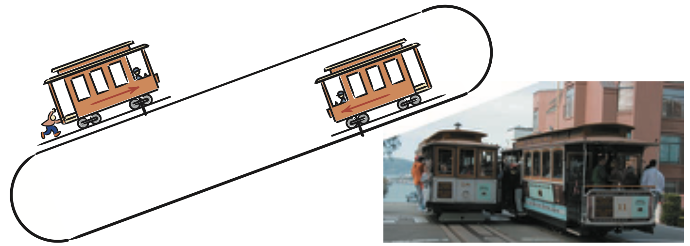
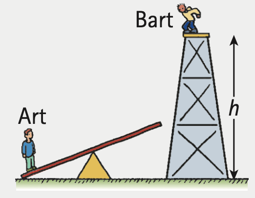

Work-Energy Theorem
Work-Energy Theorem
When a car speeds up, its gain in kinetic energy comes from the work done on it. Or, when a moving car slows, work is done to reduce its kinetic energy. We can say:3
Work = ΔKE
Work equals change in kinetic energy. This is the work-energy theorem. The work in this equation is the net work-that is, the work based on the net force.

If, for instance, you push on an object and friction also acts on the object, then the change of kinetic energy is equal to the work done by the net force, which is your push minus friction. In this case, only part of the total work that you do changes the object's kinetic energy. The rest is changed by friction into heat energy. If the force of friction is equal and opposite to your push, the net force on the object is zero and no net work is done. Then there is zero change in the object's kinetic energy. The work-energy theorem applies to decreasing speed as well. When you slam on the brakes of a car that skids, the road does work on the car. This work is the friction force multiplied by the distance over which the friction force acts.
Interestingly, the maximum friction that the road can supply to a skidding tire is nearly the same whether the car moves slowly or quickly. A car moving at twice the speed of another car takes four times (22 = 4) as much work to stop. Since the frictional force is nearly the same for both cars, the faster one skids four times as far before it stops. So, as accident investigators are well aware, an automobile going 100 km/h has four times the kinetic energy that it would have at 50 km/h, and the car skids four times as far with its wheels locked as it would going 50 km/h. Kinetic energy depends on speed squared. The same reasoning applies for antilock brakes (which keep tires from skidding in order to maintain the road's grip on the tires). For the not-quite-skidding tire, the maximum road friction is also nearly independent of the speed, so even with antilock brakes, it takes four times as far to stop at twice the speed.
When an automobile is braked and the tires don't skid, the brake drums convert kinetic energy to heat energy. If the tires skid, the treads and road are heated, not the brakes. Some drivers are familiar with another way to slow a vehicle-shift to low gear and allow the engine to do the braking. Today's hybrid cars do something similar; they use an electric generator to convert the kinetic energy of the slowing car to electric energy that can be stored in batteries, where it is used to complement the energy produced by gasoline combustion. (Chapter 25 describes how this is done.)
The work-energy theorem can apply to more than changes in kinetic energy. When work is done by an outside force, we can say that work = ΔE, where E stands for all kinds of energy. Work is not a form of energy but a way of transferring energy from one place to another or one form to another.4
Kinetic energy and potential energy are two among many forms of energy, and they underlie other forms of energy, such as chemical energy, nuclear energy, and the energy carried by sound and light. Kinetic energy of random molecular motion is related to temperature; potential energies of electric charges account for voltage; and kinetic and potential energies of vibrating air define sound intensity. Even light energy originates from the motion of electrons within atoms. Every form of energy can be transformed into every other form.
Conservation of Energy
Conservation of Energy
More important than knowing what energy is is understanding how it behaves—how it transforms. We can better understand the processes and changes that occur in nature if we analyze them in terms of energy changes—transformations from one form into another—or of transfers from one location to another. Energy is nature’s way of keeping score.
Consider the changes in energy in the operation of the pile driver back in Figure 7.7. Work done to raise the ram, giving it potential energy, becomes kinetic energy when the ram is released. This energy transfers to the piling below. The distance the piling penetrates into the ground multiplied by the average force of impact—which is the work done on the pile—is ideally equal to the initial potential energy of the ram. Taking all heat and sound energy into account, we find that energy transforms without net loss or net gain. Quite remarkable!
The study of various forms of energy and their transformations from one form into another has led to one of the greatest generalizations in physics—the law of conservation of energy:
Energy cannot be created or destroyed; it may be transformed from one form into another, but the total amount of energy never changes.
When we consider any system in its entirety, whether it be as simple as a swinging pendulum or as complex as an exploding supernova, there is one quantity that isn’t created or destroyed: energy. Energy may change form or it may simply be transferred from one place to another, but, as scientists have learned, the total energy score stays the same. This energy score takes into account the fact that the atoms that make up matter are themselves concentrated bundles of energy. When the nuclei (cores) of atoms rearrange themselves, enormous amounts of energy can be released. The Sun shines because some of this nuclear energy is transformed into radiant energy.

Enormous compression due to gravity and extremely high temperatures in the deep interior of the Sun fuse the nuclei of hydrogen atoms together to form helium nuclei. This is thermonuclear fusion, a process that releases radiant energy, a small part of which reaches Earth. Part of the energy reaching Earth falls on plants (and on other photosynthetic organisms), and part of this, in turn, is later stored in the form of coal. Another part supports life in the food chain that begins with plants (and other photosynthesizers), and part of this energy later is stored in oil. Part of the Sun’s energy goes into the evaporation of water from the ocean, and part of this returns to Earth in rain that may be trapped behind a dam. By virtue of its elevated position, the water behind a dam has energy that may be used to power a generating plant below, where it will be transformed into electric energy. The energy travels through wires to homes, where it is used for lighting, heating, cooking, and operating electrical gadgets. How wonderful that energy transforms from one form into another!

Circus Physics
Acrobat Art of mass m stands on the left end of a seesaw. Acrobat Bart of mass M jumps from a height h onto the right end of the seesaw, thus propelling Art into the air.
- Neglecting inefficiencies, how does the PE of Art at the top of his trajectory compare with the PE of Bart just before Bart jumps?
- Show that ideally Art reaches a height (M/m)h.
- If Art’s mass is 40 kg, Bart’s mass is 70 kg, and the height of the initial jump was 4 m, show that Art rises a vertical distance of 7 m.
Solution
- Neglecting inefficiencies, the entire initial PE of Bart before he drops goes into the PE of Art rising to his peak—that is, at Art’s moment of zero KE.
- PEBart = PEArt
MghBart = mghArt
hArt = (M/m)h. - hArt = (M/m)h = (70 kg/40 kg)4 m = 7 m

Recycled Energy
Recycled energy is reused energy that otherwise would be wasted. A typical fossil-fuel–fired power plant discards about two-thirds of the energy present in fuel as wasted thermal energy. Only about one-third of the energy input is converted to useful electricity. What other business throws away two-thirds of its input? This was not always so. Thomas Edison’s early power plants in the late 1880s converted much more input energy to useful purposes than today’s electric-only power plants. Edison used the cast-off heat from his generators to warm nearby homes and factories. The company he founded still delivers heat to thousands of Manhattan buildings via the largest commercial steam system in the world. New York is not alone: Most homes in the region around Copenhagen, Denmark, are warmed by heat from power plants. More than half the energy used in Denmark is recycled energy. In contrast, recycled energy in the United States amounts to less than 10% of all energy used. A principal reason is that power plants are now typically built far from buildings that would benefit from recycled energy. Nevertheless, we can’t continue to throw heat energy into the sky in one place and then burn more fossil fuel to supply heat somewhere else. Watch for more energy recycling.
Textbook Sections: 7.4, 7.5
Learning Target: Students will apply the work-energy theorem and conservation of energy to explain motion, stopping distance, energy transformations, and mechanical systems.
- I can explain that work changes energy.
- I can use the work-energy theorem to connect net work and change in kinetic energy.
- I can explain how potential energy transforms into kinetic energy and thermal energy.
- I can explain why energy is conserved even when mechanical energy seems to “disappear.”
- I can analyze energy bar charts or diagrams for roller coasters, pendulums, ramps, and collisions.